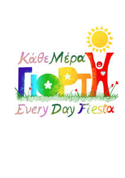

Trade Mark Journal No.2026/003 16 January 2026
UK00004318491 2 January 2026 (9,16,20,28,35,41)

- Class 9
- Downloadable educational content; digital learning materials; downloadable teaching resources; electronic publications for educational purposes; Downloadable educational course materials; Downloadable educational media.
- Class 16
- Printed educational materials; teaching and instructional materials; educational worksheets; activity books; learning resources for children, parents and preschool teaching staff; printed pedagogical material. ; Printed educational materials; Educational and instructional material; Instructional materials; Instructional and teaching materials; Teaching materials; Educational equipment; Educational publications; Printed teaching materials; Educational books; Instructional and teaching material; Printed training materials; Paper teaching materials; Stationery and educational supplies; Writing materials; Packaging materials; Printed teaching material.
- Class 20
- Chests for toys; Toy boxes [furniture].
- Class 28
- Toys; Toys, games, and playthings; Ride-on toys; Cuddly toys; Puzzles [toys]; Stuffed toys; Plush toys; Inflatable toys; Toys for babies; Wind-up toys; Fidget toys; Toys for use in perambulators; Plastic toys; Radio-controlled toys; Crib toys; Scooters [toys]; Mobiles [toys]; Toys for infants; Wooden toys; Model cars [toys or playthings]; Toys and playthings for pet animals; Toy dolls; Educational toys; Outdoor toys; Toy playsets; Models being toys; Bath toys; Infant toys; Sandbox toys; Bathtub toys; Action figures [toys or playthings]; Whistles [toys]; Inflatable ride-on toys; Sand toys; Soft toys; Miniature car models [toys or playthings]; Bouncing toys; Cloth toys; Toy figurines; Tricycles for infants [toys]; Musical toys; Toy furniture; Play mats for use with toy vehicles [playthings]; Mechanical toys; Wheeled toys; Clockwork toys; Developmental toys; Crib mobiles [toys]; Plastic toys for use in the bath; Fluffy toys; Stuffed animals [toys]; Inflatable bath toys; Stacking toys; Fabric toys; Rocking toys; Modular toys; Water toys; Plastic models being toys; Model toys; Play mats incorporating infant toys [playthings]; Toy prams; Drawing toys; Action toys; Stuffed and plush toys; Stuffed plush toys; Plush stuffed toys; Battery-operated action toys; Sketching toys; Children's toys; Squeezable squeaking toys; Smart toys; Plastic character toys; Toy bicycles; Toy tableware; Whistling toys; Construction toys; Clockwork toys [of plastics]; Toy wheelbarrows; Articles of clothing for toys; Push toys; Squeeze toys; Talking toys; Toy bakeware and toy cookware; Toy mobiles; Bendy balls being toys; Toy xylophones; Stuffed bean-filled toys; Clothing for toy figures; Chewing toys for parrots; Toy animals; Pull toys; Toy cars; Toy strollers; Assembly toys; Water-squirting toys; Toy balloons; Intelligent toys; Toy scooters; Toy hats; Music box toys; Toy cookware; Punching toys; Toy harmonicas; Toy automobiles; Toy robots; Smart plush toys; Toy tools; Toy weapons; Toys in the form of puzzles; Xylophones being musical toys; Novelty toys for parties; Toy glockenspiels; Soft sculpture toys; Inflatable pool toys; Costumes being childrens playthings; Toy pushchairs; Toy bakeware; Money guns being toys; Toy balls; Puzzle mats [toys]; Toy airplanes; Toy vehicles; Playthings; Toys adapted for educational purposes; Electronic educational teaching games; Educational playthings; Play figures; Paddle ball games; Scratch cards for playing lottery games; Role play games; Role playing games; Models for use with role playing games.
- Class 35
- Educational consultancy services; advisory services relating to education and early years provision; business consultancy in the field of education; Retail services in relation to toys; Retail services in relation to educational supplies; Wholesale services in relation to educational supplies; Arranging and conducting of fairs and exhibitions for business purposes.
- Class 41
- Education and training services; early years education; preschool education; educational programmes for children; educational workshops; creative educational activities; pedagogical services; development and delivery of educational content; educational storytelling; cultural and arts education; organisation of educational activities for children; learning activities for personal and social development, well-being and mindfulness education etc; Education; Vocational education; Pre-school education; Education and training; Academies [education]; Education and instruction; Services of schools [education]; Education services; Education, teaching and training; Academy services (Education -); Education academy services; Academy education services; Vocational education and training services; Music education; Training and education services; Education and training services; Education and instruction services; Kindergarten services [education or entertainment]; Educational services for providing courses of education; Provision of education courses; Career counseling [education]; Higher education services; Provision of education and training; Provision of training and education; Providing of education; Entertainment, education and instruction services; Education academy services for teaching languages; Education services relating to vocational training; Education academy services for teaching art history; Education information; Information (Education -); Primary education services; Adult education services; Residential education courses; Linguistic education and training services; Education and training consultancy; Primary education services relating to literacy; Further education; Technological education services; Online education services; Lingual education; Management of education services; Management education services; Education services relating to nutrition; Education services related to the arts; Education services relating to health; Dietary education services; Education academy services for teaching construction drafting; Career counselling relating to education and training; Educational services provided by institutes of higher education; Club education services; Education and training in the field of music and entertainment; Research in the field of education; Guidance (Vocational -) [education or training advice]; Vocational guidance [education or training advice]; Education information services; Education services for imparting language teaching methods; Secondary school educational services; Training or education services in the field of life coaching; Career counselling [training and education advice]; Blindness prevention education services; Vocational education for young people; Education services relating to yoga; Education services relating to music; Career advisory services (education or training advice); English language education services; Educational services provided by institutes of further education; Organization of education competitions; Organization of competitions [education or entertainment]; Competitions (Organization of -) [education or entertainment]; Organization of competitions for education or entertainment; Foreign language education services; Rental of toys; Development of educational materials; Publication of educational materials; Rental of educational materials; Publication of educational teaching materials; Hire of educational materials; Production and rental of educational and instructional materials; Dissemination of educational material; Educational materials or apparatus (Rental of -); Publishing of educational material; Leasing of educational material; Educational information; Educational and teaching services; Educational services; Workshops for educational purposes; Lease of instructional materials; Educational research; Educational information services; Educational seminars; Arranging of presentations for educational purposes; Educational instruction; Exhibition services for educational purposes; Educational and training services; Educational services for the teaching of languages; Educational services in the nature of correspondence courses; Audio-visual display presentation services for educational purposes; Rental of instructional material; Educational demonstrations; Educational and instruction services relating to arts and crafts; Planning of lectures for educational purposes; Examination services (Educational -); Educational courses (Provision of -); Educational services for teaching transcription techniques; Educational services relating to information technology; Educational institute services; Educational services in the nature of correspondence schools; Educational services provided for teachers of children; Arranging of demonstrations for educational purposes; Arrangement of seminars for educational purposes; Educational services provided for children; Educational services for providing courses of instruction; Provision of educational information; Educational and training services relating to games; Development of educational courses and examinations; Arranging of exhibitions for cultural or educational purposes; Educational examination; Publication of educational and training guides; Organization of exhibitions for educational purposes; Organization of exhibitions for cultural or educational purposes; Exhibitions (Organization of -) for cultural or educational purposes; Organization of exhibitions for cultural and educational purposes; Lease of teaching materials; Arranging of exhibitions for educational purposes; Exhibitions (Arranging -) for educational purposes; Educational testing; Educational establishments providing courses of instruction (Services of -); Developing educational manuals; Planning of seminars for educational purposes; Hire of teaching materials; Educational services relating to the teaching of foreign languages; Conducting of educational courses; Providing educational demonstrations; Educational services relating to cooking; Publication of educational books; Publication of educational texts; Educational services provided to industry; Preparation of educational courses and examinations; Educational services provided by a school; Educational services relating to spiritual development; Arranging of displays for educational purposes; Educational services for teaching manual writing; Film production for educational purposes; Educational services in the nature of coaching; Education services relating to quality services; Providing educational entertainment services for children in after-school centers; Educational services for the dramatic arts; Educational services provided by schools; Educational services for teaching acting; Computer based educational services; Educational services relating to dancing; Educational services provided by colleges; Nursery school services [educational]; Provision of educational entertainment services for children in after school centers; Educational services provided by universities; Educational services provided by academies; Cultural services; Education services provided in virtual environments; Teaching services; Career information and advisory services (educational and training advice); Advisory services relating to education; Entertainment services; Educational consultancy; Second language educational services; Recreational services; Educational services relating to first aid; Computer assisted education services; Vocational training services; Institutes of education (Services provided by -); Academic mentoring of school age children; Arranging of workshops and seminars; Conducting courses, seminars and workshops; Arranging of workshops; Arranging and conducting of seminars and workshops; Arranging and conducting of workshops and seminars; Conducting workshops and seminars in art appreciation; Conducting of workshops and seminars in art appreciation; Conducting workshops [training]; Seminars; Arranging and conducting of workshops and seminars in self-awareness; Workshops for training purposes; Conducting workshops and seminars in self awareness; Conducting workshops and seminars in personal awareness; Workshops (Arranging and conducting of -) [training]; Arranging and conducting of workshops [training]; Arranging and conducting of training workshops; Organising of educational seminars; Organisation of seminars and conferences; Arranging and conducting of workshops; Arranging and conducting workshops; Arranging professional workshop and training courses; Organising of education seminars; Workshops for cultural purposes; Arranging, conducting and organisation of workshops; Conducting training seminars; Arranging and conducting conferences and seminars; Conducting seminars; Conducting of seminars and congresses; Organisation of training seminars; Organisation of seminars; Conducting of instructional seminars; Arranging of seminars; Conducting training seminars for clients; Workshops for recreational purposes; Organisation of educational seminars; Organisation of conferences, exhibitions and competitions; Organising of educational lectures; Arranging and conducting of training seminars; Organising of educational conferences; Providing online training seminars; Arranging and conducting of educational seminars; Organization of seminars; Organising of education conferences; Conducting of educational conferences; Organisation of seminars relating to training; Organising of educational exhibitions; Arranging of seminars relating to training; Producing and conducting exercises for music classes and programmes; Organisation of continuing educational seminars; Organising of education exhibitions; Arranging and conducting of seminars; Seminars (Arranging and conducting of -); Arranging and conducting seminars; Arranging, conducting and organisation of seminars; Consultancy and information services relating to arranging, conducting and organisation of workshops; Organisation of meetings and conferences; Arranging of presentations for training purposes; Organising of conferences for educational purposes; Arranging of educational conferences; Arranging of exhibitions for training purposes; Arranging of demonstrations for training purposes; Conducting of classes; Arranging and conducting educational conferences; Organisation of seminars relating to education; Arranging of seminars relating to education; Organisation of conferences relating to vocational training; Arranging and conducting of lectures for training purposes; Conducting of instructional seminars relating to time organisation; Arranging of training courses; Organising of exhibitions for educational purposes; Arranging for students to participate in educational courses; Arranging of seminars relating to cultural activities; Organisation of symposia relating to training; Arranging of conferences relating to training; Arranging, conducting and organization of seminars; Organising of competitions for education; Competitions (Organising of education -); Organising of education competitions; Arranging and conducting of training courses; Training courses; Organisation of Webinars; Conducting of educational events; Organisation of conferences relating to training; Conducting instructional courses; Organising of meetings in the field of education; Arranging, conducting and organisation of symposiums; Conducting classes in nutrition; Conducting of business conferences; Arranging of festivals for training purposes; Organising of conferences relating to education; Organisation of training courses; Conducting of instructional, educational and training courses for young people and adults; Arranging and conducting of symposiums; Symposiums (Arranging and conducting of -); Production of course material distributed at professional seminars; Arranging of lectures; Organising of educational congresses; Arranging and conducting of educational courses; Arranging of seminars relating to business; Arranging of conferences; Arranging conferences; Conducting of exhibitions for educational purposes; Exhibitions (Conducting -) for educational purposes; Conducting of instructional seminars relating to time management; Arranging and conducting of lectures for educational purposes; Conducting of courses; Services for arranging teaching programmes; Organisation of tours for training purposes; Organisation of educational activities for summer camps; Educational consultancy services; Professional consultancy relating to education; Educational advisory services; Training consultancy; Organisation of exhibitions for cultural or educational purposes; Directing of plays; Arranging and conducting of games; Arranging of games; Play schemes [entertainment/education]; Provision of childrens' educational services through play groups; Providing recreational areas in the nature of play areas for children.
Lamprini Angeliki Niarchou
Representative: Olga Leimoni